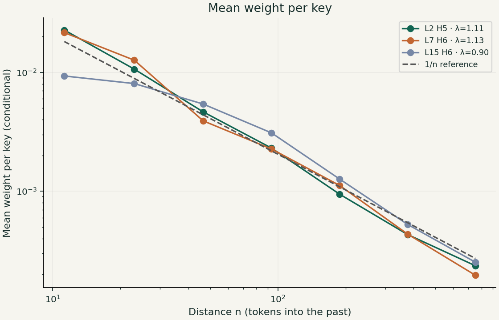
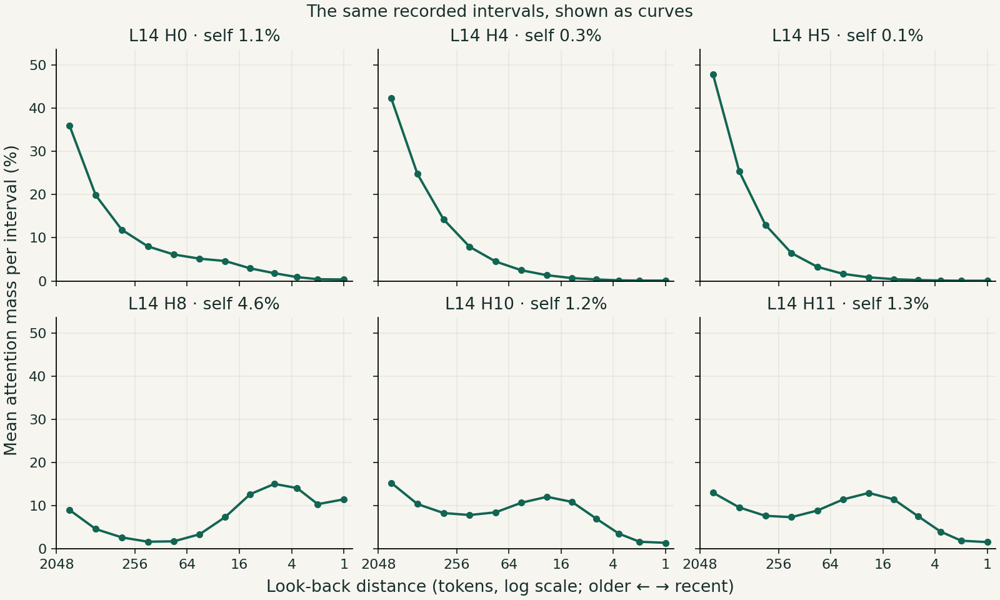
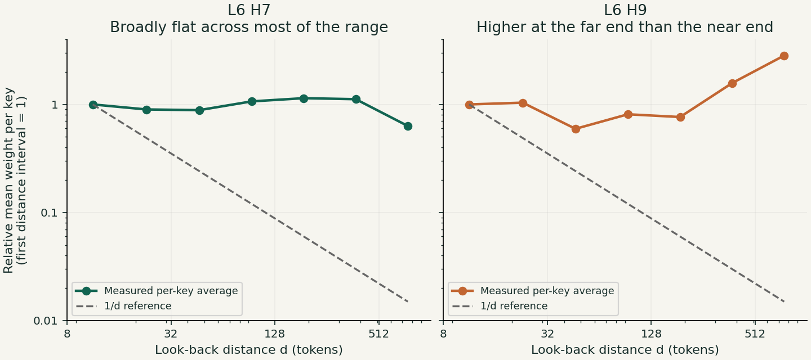

Attention and positional encodings · Part 3
Why attention can decay like 1/n
When I looked at attention over longer distances, a simple pattern kept appearing in some heads: a token twice as far into the past received roughly half as much attention. Nearby tokens mattered more, but the distant past still had a share. I wanted to understand whether RoPE’s collection of waves could help explain that balance.
A little less for each token, a similar share for each scale
Imagine looking back at the last few words, then the last sentence, then the last paragraph. Each wider view contains more tokens. Giving every distant token less weight does not necessarily mean ignoring the wider view.
For example, there are 32 tokens between 32 and 63 positions ago, and twice as many between 64 and 127. If the farther tokens each receive about half the attention, those two regions receive roughly the same total share. That is the appealing property of a 1/n pattern: it balances attention across distance scales, rather than across individual tokens.

These heads are examples of a recurring tendency. Other heads behave differently, and an average over many queries smooths away the sharp peaks of individual attention decisions.
How often did this pattern appear?
The held-out set contained ten prose and ten code documents, using 2K body-token contexts. Of 333 eligible heads, 102 had a fitted exponent between 0.8 and 1.2 and R² of at least 0.8 across seven distance intervals, from 8 to 1,023 tokens. Of 108 qualifying heads in discovery, 96 also qualified on the new documents.
Eligibility required at least 1% of a head’s attention mass in that range and positive mass in every interval. For display, each head is normalized within that range; the recorded attention used the full causal softmax denominator. Recomputed fits · Measurement provenance.
The smooth patterns I first saw
Before fitting a decay curve, I had been looking at these heatmaps. They put very different kinds of heads next to one another: some give much of their attention to older history, others stay close to the query, and some have a broad preference in between.

What struck me was how gradually the average changes as we move across the plot. Each step along this logarithmic axis covers a much wider stretch of text: a handful of tokens becomes tens, then hundreds, then thousands. Yet several heads show a broad, continuous-looking preference rather than an abrupt switch between those scales.

These plots show the total share of attention in each interval. Farther intervals contain more keys, so a strong band on the left need not mean that each distant key outweighs each nearby key. That distinction is the link to the 1/n observation above: attention per token and attention per distance scale tell different stories.
The smoothness is an observation about these averages. Averaging queries and grouping distances can hide sharp, token-specific peaks. I would like to understand which pair contributions create these broad profiles, and how they change when we inspect one query at a time.
Behind the average: rarer peaks, or weaker ones?
A smooth average does not mean that each query spreads its attention smoothly over the past. Individual queries have peaks at particular tokens. Those peaks fall in different places from one query to the next; averaging them produces the much smoother distance profile.
To look beneath that average, I separated two questions: how often does a token form a peak, and how much attention does it receive when it does? Looking only at each query’s eight strongest local peaks, the distant ones were both rarer per token and weaker in L7 H6. But that leaves out the many smaller peaks.
Counting every local peak in that same head gave a clearer result: the peaks remained about as frequent, but became much weaker. Between 16–31 and 512–1,022 tokens into the past, about 30–31% of tokens were local peaks in both regions. Their average height fell about 65-fold, closely tracking the 64-fold fall in average attention per token.

So I would not describe the result simply as “fewer peaks farther away.” The strongest peaks become rarer, while plenty of smaller peaks remain. In this head, falling peak heights track the average decay much more closely than a falling frequency of local peaks. Peak tops carry roughly 55–56% of the attention in the two regions, so this describes a substantial part of the pattern without accounting for every token. It still leaves open why the model produces those heights.
A pattern, not a rule imposed on every head
If RoPE forced attention to follow a 1/d law, we should see that same decline in every head using it. We do not. In the same held-out measurements, L6 H7 has a roughly flat average weight per key across much of the 8–511-token range. L6 H9 even gives more average weight per key to the 512–1,023-token interval than to the 8–15-token interval. These are averages per key, so the difference is not simply that the farther interval contains more tokens.

Those heads use the same RoPE frequency schedule as the heads with approximately inverse-distance decay. That contrast is evidence that 1/d is a behavior the model can express, rather than a rule RoPE imposes on every head. It does not rule out a tendency encouraged by the frequency schedule. The learned query and key projections, and the text being processed, still determine which patterns a head actually produces.
What I want to understand next
The next question is which learned contributions produce these average profiles. Their query and key vectors change with the text, and their phases need not start aligned. Averaging attention also differs from applying softmax to an averaged score. The averages alone do not establish what causes the pattern.
The original RoFormer paper discusses distance decay. Barbero and colleagues’ Round and Round We Go! shows why decay is not a general consequence of RoPE. For me, the interesting next step is to use the navigator to connect the average curves back to the individual pairs and queries that created them.